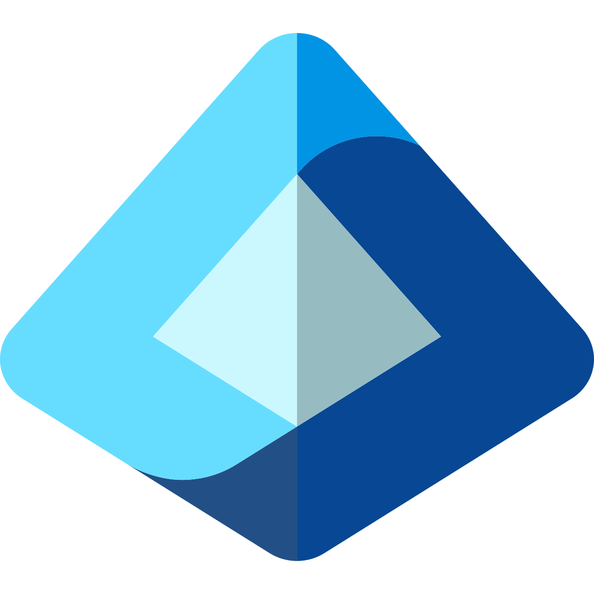

🚀 Project Completed: IAM-RD-Lab
Excited to share the completion of IAM-RD-Lab, a personal R&D project — a secure enterprise sign-in application built with Next.js, React, and the Microsoft Authentication Library (MSAL), integrated with Microsoft Entra ID.
This project demonstrates my hands-on understanding of enterprise identity:
- OAuth 2.0 / OpenID Connect authorization-code flow with PKCE
- Token lifecycle management in the browser (cache, silent refresh, interactive fallback)
- Microsoft Graph integration (user profile & group memberships)
- Real security boundary: server-side JWT validation against Microsoft's JWKS in Next.js
It's a practical example of how modern web apps can securely manage identity while respecting the true trust boundaries between client, server, and identity provider.
🔒 IAM-RD-Lab — Secure Enterprise Sign-In with Microsoft Entra ID
OAuth 2.0 + OpenID Connect (PKCE) · Microsoft Graph · Server-side JWT Validation
1. User (Browser)
Next.js + React SPA
- Sign in with Microsoft
- Token management (MSAL)
- Call Microsoft Graph
- Protected routes
1. Sign in (Redirect)
2. Auth Code + PKCE
3. Token Request
+ Code Verifier
+ Code Verifier
4. Tokens (AT, IDT, RT)
2. Microsoft Entra ID
(Identity Provider)

Microsoft Entra ID
- Authenticate user
(MFA / Conditional Access) - Issue authorization code
- Validate PKCE
- Issue tokens
(Access, ID, Refresh)
5. API Call with
Access Token
Access Token
6. API Response
(JSON)
(JSON)
3. Microsoft Graph
(Resource API)
Microsoft Graph
APIs
GET /v1.0/me
(User Profile)
GET /v1.0/me/memberOf
(Group Memberships)
7. Send ID Token
(Validate)
(Validate)
8. Validation Result
(Claims or 401)
(Claims or 401)
4. Next.js Server (Trust Boundary)
POST /api/validate
- Receives ID Token (JWT)
- Fetches Microsoft JWKS
- Verifies signature (RS256)
- Validates
iss,aud,exp - Returns claims or 401
Fetch JWKS
(cached)
(cached)
Microsoft
/.well-known/openid-
configuration/v2.0/keys
configuration/v2.0/keys
JWKS
(Signing Keys)
(Signing Keys)
Key Features
- Authorization-code flow with PKCE (S256) — SPA best practice per RFC 7636
- Access & refresh token lifecycle (cache → silent refresh → interactive fallback)
- Microsoft Graph: user profile & group memberships (delegated permissions)
- Protected route with client-side AuthGuard (UX boundary)
- Server-side ID token validation against Microsoft JWKS (security boundary)
- Sign out & session cache cleanup at IdP
Tech Stack
Next.js 16 (App Router)
React 19
TypeScript 5
@azure/msal-browser
@azure/msal-react
jose (JWT)
Microsoft Entra ID